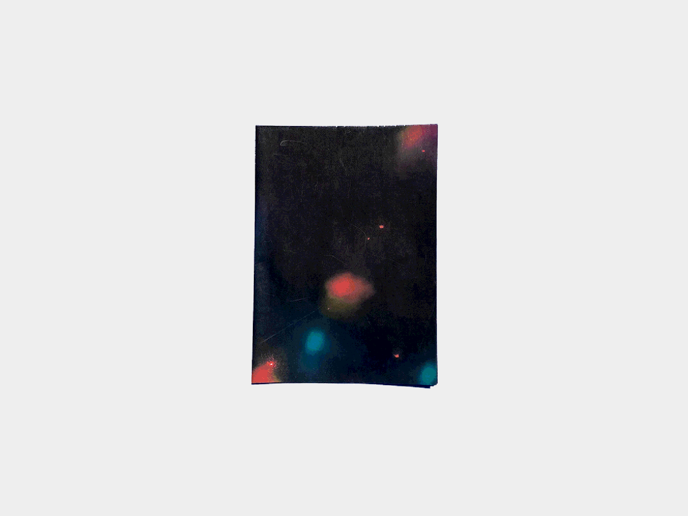
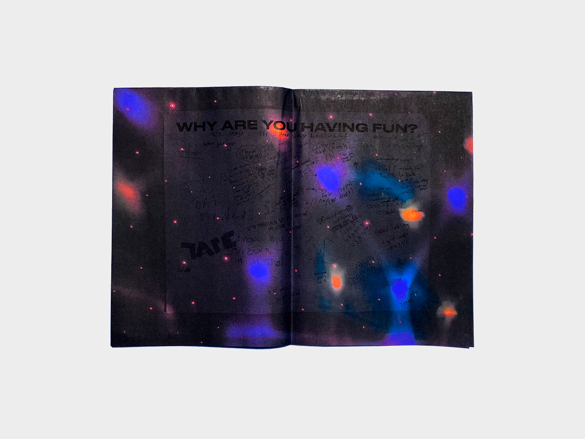
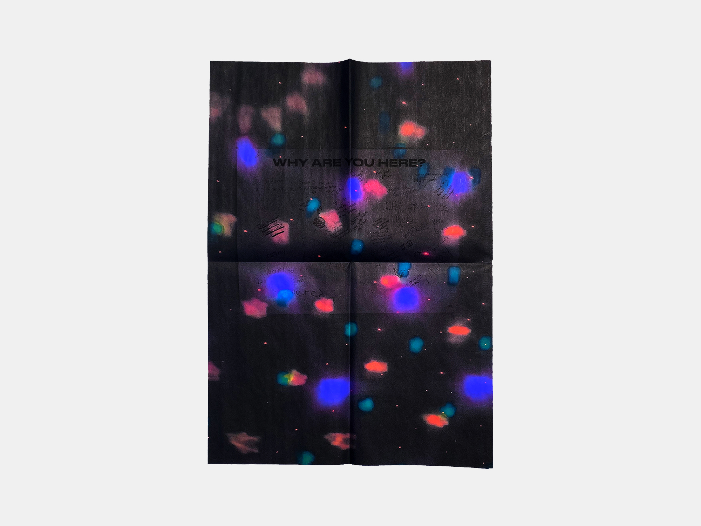
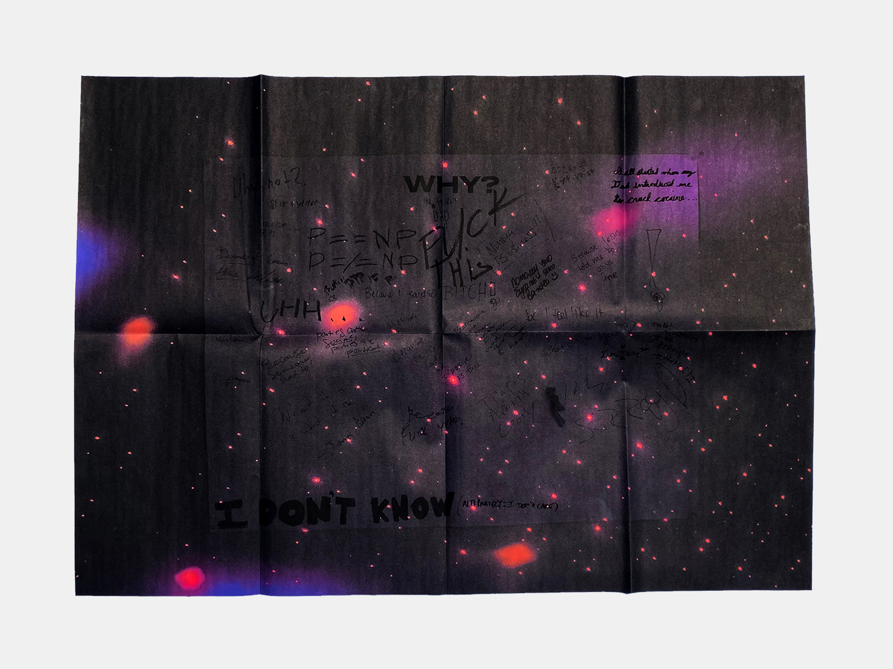

I revisited theme of parties in this piece, "Friday Night." This time, I chose to convey the atmosphere of a party by means of a double image: where one can unfocus their eye and look at the colorful lights spread across the page, or focus their eye and read whats written on the page.

The questions were chosen to provoke a sincere response, and in turn gather real data about the 20-year-olds attending this party. Some responses included “Parties are social, parties are political,” “F*** this,” “Why not?” “None of your business!” and “I don’t know.”


After the data was collected, I took photos of each poster in the disco lights, and put them into a fold-out booklet that expands into a full-size poster reading, "Why?"